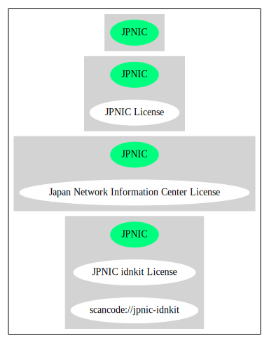

Key |
Value |
|---|---|
Fullname |
Japan Network Information Center License |
Shortname |
JPNIC |
Rating |
Unknown, probably Attention or Stop or No-Go |
Classification |
NoCopyleft |
Other Names:
scancode://jpnic-idnkit
JPNIC idnkit License
Homepage: https://www.nic.ad.jp/ja/idn/idnkit/download/
SPDX: http://spdx.org/licenses/JPNIC.json
https://gitlab.isc.org/isc-projects/bind9/blob/master/COPYRIGHT#L366
https://jprs.co.jp/idn/
By using this file, you agree to the terms and conditions set forth bellow.
LICENSE TERMS AND CONDITIONS
The following License Terms and Conditions apply, unless a different
license is obtained from Japan Network Information Center ("JPNIC"),
a Japanese association, Kokusai-Kougyou-Kanda Bldg 6F, 2-3-4 Uchi-Kanda,
Chiyoda-ku, Tokyo 101-0047, Japan.
1. Use, Modification and Redistribution (including distribution of any
modified or derived work) in source and/or binary forms is permitted
under this License Terms and Conditions.
2. Redistribution of source code must retain the copyright notices as they
appear in each source code file, this License Terms and Conditions.
3. Redistribution in binary form must reproduce the Copyright Notice,
this License Terms and Conditions, in the documentation and/or other
materials provided with the distribution. For the purposes of binary
distribution the "Copyright Notice" refers to the following language:
"Copyright (c) 2000-2002 Japan Network Information Center. All rights
reserved."
4. The name of JPNIC may not be used to endorse or promote products
derived from this Software without specific prior written approval of
JPNIC.
5. Disclaimer/Limitation of Liability: THIS SOFTWARE IS PROVIDED BY JPNIC
"AS IS" AND ANY EXPRESS OR IMPLIED WARRANTIES, INCLUDING, BUT NOT
LIMITED TO, THE IMPLIED WARRANTIES OF MERCHANTABILITY AND FITNESS FOR A
PARTICULAR PURPOSE ARE DISCLAIMED. IN NO EVENT SHALL JPNIC BE LIABLE
FOR ANY DIRECT, INDIRECT, INCIDENTAL, SPECIAL, EXEMPLARY, OR
CONSEQUENTIAL DAMAGES (INCLUDING, BUT NOT LIMITED TO, PROCUREMENT OF
SUBSTITUTE GOODS OR SERVICES; LOSS OF USE, DATA, OR PROFITS; OR
BUSINESS INTERRUPTION) HOWEVER CAUSED AND ON ANY THEORY OF LIABILITY,
WHETHER IN CONTRACT, STRICT LIABILITY, OR TORT (INCLUDING NEGLIGENCE OR
OTHERWISE) ARISING IN ANY WAY OUT OF THE USE OF THIS SOFTWARE, EVEN IF
ADVISED OF THE POSSIBILITY OF SUCH DAMAGES.
{
"__impliedNames": [
"JPNIC",
"Japan Network Information Center License",
"scancode://jpnic-idnkit",
"JPNIC idnkit License"
],
"__impliedId": "JPNIC",
"facts": {
"SPDX": {
"isSPDXLicenseDeprecated": false,
"spdxFullName": "Japan Network Information Center License",
"spdxDetailsURL": "http://spdx.org/licenses/JPNIC.json",
"_sourceURL": "https://spdx.org/licenses/JPNIC.html",
"spdxLicIsOSIApproved": false,
"spdxSeeAlso": [
"https://gitlab.isc.org/isc-projects/bind9/blob/master/COPYRIGHT#L366"
],
"_implications": {
"__impliedNames": [
"JPNIC",
"Japan Network Information Center License"
],
"__impliedId": "JPNIC",
"__isOsiApproved": false,
"__impliedURLs": [
[
"SPDX",
"http://spdx.org/licenses/JPNIC.json"
],
[
null,
"https://gitlab.isc.org/isc-projects/bind9/blob/master/COPYRIGHT#L366"
]
]
},
"spdxLicenseId": "JPNIC"
},
"Scancode": {
"otherUrls": [
"https://gitlab.isc.org/isc-projects/bind9/blob/master/COPYRIGHT#L366",
"https://jprs.co.jp/idn/"
],
"homepageUrl": "https://www.nic.ad.jp/ja/idn/idnkit/download/",
"shortName": "JPNIC idnkit License",
"textUrls": null,
"text": "By using this file, you agree to the terms and conditions set forth bellow.\n\n LICENSE TERMS AND CONDITIONS \n\nThe following License Terms and Conditions apply, unless a different\nlicense is obtained from Japan Network Information Center (\"JPNIC\"),\na Japanese association, Kokusai-Kougyou-Kanda Bldg 6F, 2-3-4 Uchi-Kanda,\nChiyoda-ku, Tokyo 101-0047, Japan.\n\n1. Use, Modification and Redistribution (including distribution of any\n modified or derived work) in source and/or binary forms is permitted\n under this License Terms and Conditions.\n\n2. Redistribution of source code must retain the copyright notices as they\n appear in each source code file, this License Terms and Conditions.\n\n3. Redistribution in binary form must reproduce the Copyright Notice,\n this License Terms and Conditions, in the documentation and/or other\n materials provided with the distribution. For the purposes of binary\n distribution the \"Copyright Notice\" refers to the following language:\n \"Copyright (c) 2000-2002 Japan Network Information Center. All rights\n reserved.\"\n\n4. The name of JPNIC may not be used to endorse or promote products\n derived from this Software without specific prior written approval of\n JPNIC.\n\n5. Disclaimer/Limitation of Liability: THIS SOFTWARE IS PROVIDED BY JPNIC\n \"AS IS\" AND ANY EXPRESS OR IMPLIED WARRANTIES, INCLUDING, BUT NOT\n LIMITED TO, THE IMPLIED WARRANTIES OF MERCHANTABILITY AND FITNESS FOR A\n PARTICULAR PURPOSE ARE DISCLAIMED. IN NO EVENT SHALL JPNIC BE LIABLE\n FOR ANY DIRECT, INDIRECT, INCIDENTAL, SPECIAL, EXEMPLARY, OR\n CONSEQUENTIAL DAMAGES (INCLUDING, BUT NOT LIMITED TO, PROCUREMENT OF\n SUBSTITUTE GOODS OR SERVICES; LOSS OF USE, DATA, OR PROFITS; OR\n BUSINESS INTERRUPTION) HOWEVER CAUSED AND ON ANY THEORY OF LIABILITY,\n WHETHER IN CONTRACT, STRICT LIABILITY, OR TORT (INCLUDING NEGLIGENCE OR\n OTHERWISE) ARISING IN ANY WAY OUT OF THE USE OF THIS SOFTWARE, EVEN IF\n ADVISED OF THE POSSIBILITY OF SUCH DAMAGES.\n\n",
"category": "Permissive",
"osiUrl": null,
"owner": "JPNIC",
"_sourceURL": "https://github.com/nexB/scancode-toolkit/blob/develop/src/licensedcode/data/licenses/jpnic-idnkit.yml",
"key": "jpnic-idnkit",
"name": "JPNIC idnkit License",
"spdxId": "JPNIC",
"notes": null,
"_implications": {
"__impliedNames": [
"scancode://jpnic-idnkit",
"JPNIC idnkit License",
"JPNIC"
],
"__impliedId": "JPNIC",
"__impliedCopyleft": [
[
"Scancode",
"NoCopyleft"
]
],
"__calculatedCopyleft": "NoCopyleft",
"__impliedText": "By using this file, you agree to the terms and conditions set forth bellow.\n\n LICENSE TERMS AND CONDITIONS \n\nThe following License Terms and Conditions apply, unless a different\nlicense is obtained from Japan Network Information Center (\"JPNIC\"),\na Japanese association, Kokusai-Kougyou-Kanda Bldg 6F, 2-3-4 Uchi-Kanda,\nChiyoda-ku, Tokyo 101-0047, Japan.\n\n1. Use, Modification and Redistribution (including distribution of any\n modified or derived work) in source and/or binary forms is permitted\n under this License Terms and Conditions.\n\n2. Redistribution of source code must retain the copyright notices as they\n appear in each source code file, this License Terms and Conditions.\n\n3. Redistribution in binary form must reproduce the Copyright Notice,\n this License Terms and Conditions, in the documentation and/or other\n materials provided with the distribution. For the purposes of binary\n distribution the \"Copyright Notice\" refers to the following language:\n \"Copyright (c) 2000-2002 Japan Network Information Center. All rights\n reserved.\"\n\n4. The name of JPNIC may not be used to endorse or promote products\n derived from this Software without specific prior written approval of\n JPNIC.\n\n5. Disclaimer/Limitation of Liability: THIS SOFTWARE IS PROVIDED BY JPNIC\n \"AS IS\" AND ANY EXPRESS OR IMPLIED WARRANTIES, INCLUDING, BUT NOT\n LIMITED TO, THE IMPLIED WARRANTIES OF MERCHANTABILITY AND FITNESS FOR A\n PARTICULAR PURPOSE ARE DISCLAIMED. IN NO EVENT SHALL JPNIC BE LIABLE\n FOR ANY DIRECT, INDIRECT, INCIDENTAL, SPECIAL, EXEMPLARY, OR\n CONSEQUENTIAL DAMAGES (INCLUDING, BUT NOT LIMITED TO, PROCUREMENT OF\n SUBSTITUTE GOODS OR SERVICES; LOSS OF USE, DATA, OR PROFITS; OR\n BUSINESS INTERRUPTION) HOWEVER CAUSED AND ON ANY THEORY OF LIABILITY,\n WHETHER IN CONTRACT, STRICT LIABILITY, OR TORT (INCLUDING NEGLIGENCE OR\n OTHERWISE) ARISING IN ANY WAY OUT OF THE USE OF THIS SOFTWARE, EVEN IF\n ADVISED OF THE POSSIBILITY OF SUCH DAMAGES.\n\n",
"__impliedURLs": [
[
"Homepage",
"https://www.nic.ad.jp/ja/idn/idnkit/download/"
],
[
null,
"https://gitlab.isc.org/isc-projects/bind9/blob/master/COPYRIGHT#L366"
],
[
null,
"https://jprs.co.jp/idn/"
]
]
}
}
},
"__impliedCopyleft": [
[
"Scancode",
"NoCopyleft"
]
],
"__calculatedCopyleft": "NoCopyleft",
"__isOsiApproved": false,
"__impliedText": "By using this file, you agree to the terms and conditions set forth bellow.\n\n LICENSE TERMS AND CONDITIONS \n\nThe following License Terms and Conditions apply, unless a different\nlicense is obtained from Japan Network Information Center (\"JPNIC\"),\na Japanese association, Kokusai-Kougyou-Kanda Bldg 6F, 2-3-4 Uchi-Kanda,\nChiyoda-ku, Tokyo 101-0047, Japan.\n\n1. Use, Modification and Redistribution (including distribution of any\n modified or derived work) in source and/or binary forms is permitted\n under this License Terms and Conditions.\n\n2. Redistribution of source code must retain the copyright notices as they\n appear in each source code file, this License Terms and Conditions.\n\n3. Redistribution in binary form must reproduce the Copyright Notice,\n this License Terms and Conditions, in the documentation and/or other\n materials provided with the distribution. For the purposes of binary\n distribution the \"Copyright Notice\" refers to the following language:\n \"Copyright (c) 2000-2002 Japan Network Information Center. All rights\n reserved.\"\n\n4. The name of JPNIC may not be used to endorse or promote products\n derived from this Software without specific prior written approval of\n JPNIC.\n\n5. Disclaimer/Limitation of Liability: THIS SOFTWARE IS PROVIDED BY JPNIC\n \"AS IS\" AND ANY EXPRESS OR IMPLIED WARRANTIES, INCLUDING, BUT NOT\n LIMITED TO, THE IMPLIED WARRANTIES OF MERCHANTABILITY AND FITNESS FOR A\n PARTICULAR PURPOSE ARE DISCLAIMED. IN NO EVENT SHALL JPNIC BE LIABLE\n FOR ANY DIRECT, INDIRECT, INCIDENTAL, SPECIAL, EXEMPLARY, OR\n CONSEQUENTIAL DAMAGES (INCLUDING, BUT NOT LIMITED TO, PROCUREMENT OF\n SUBSTITUTE GOODS OR SERVICES; LOSS OF USE, DATA, OR PROFITS; OR\n BUSINESS INTERRUPTION) HOWEVER CAUSED AND ON ANY THEORY OF LIABILITY,\n WHETHER IN CONTRACT, STRICT LIABILITY, OR TORT (INCLUDING NEGLIGENCE OR\n OTHERWISE) ARISING IN ANY WAY OUT OF THE USE OF THIS SOFTWARE, EVEN IF\n ADVISED OF THE POSSIBILITY OF SUCH DAMAGES.\n\n",
"__impliedURLs": [
[
"SPDX",
"http://spdx.org/licenses/JPNIC.json"
],
[
null,
"https://gitlab.isc.org/isc-projects/bind9/blob/master/COPYRIGHT#L366"
],
[
"Homepage",
"https://www.nic.ad.jp/ja/idn/idnkit/download/"
],
[
null,
"https://jprs.co.jp/idn/"
]
]
}